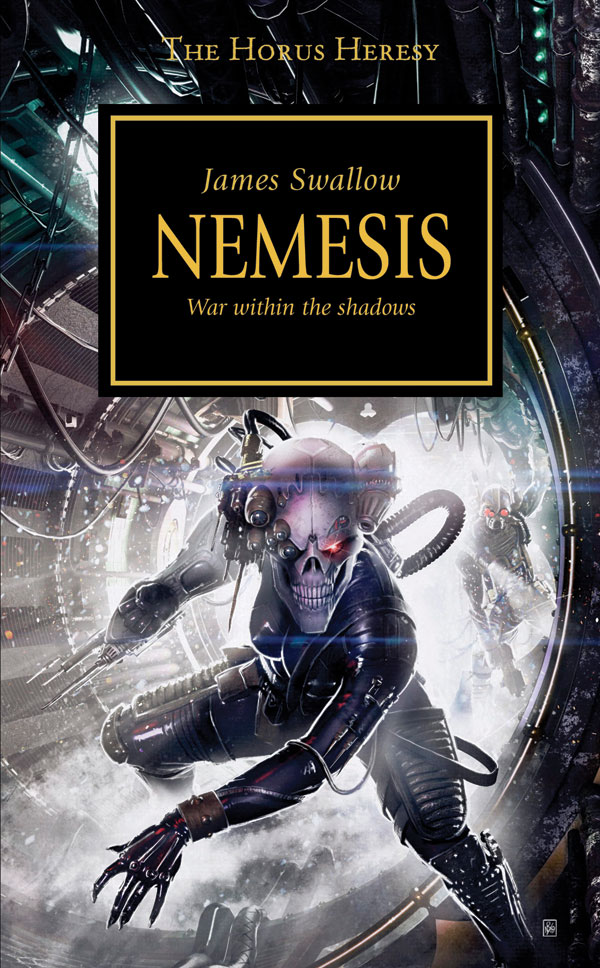

NEMESIS

Author: James Swallow
Format: Novel
In the shadows of the Imperial Palace, powerful figures assemble a team of assassins to kill Horus before the rebellion spreads. Their mission could change the course of the war, but the Traitors have plans of their own.
Introduction reviewed against Black Library’s description on 2026-09-27. The publisher page may contain spoilers.
Publication facts: publisher source, checked 2026-09-26.
Open this work in the interactive Archive to track reading progress and explore related works.
Take the three-question memory check for this work. The quiz contains story spoilers.